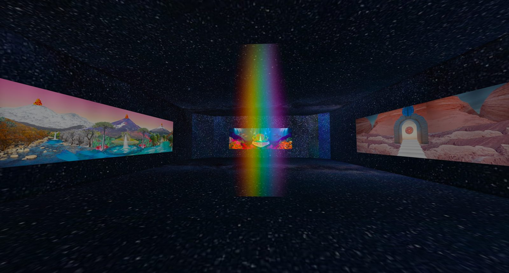
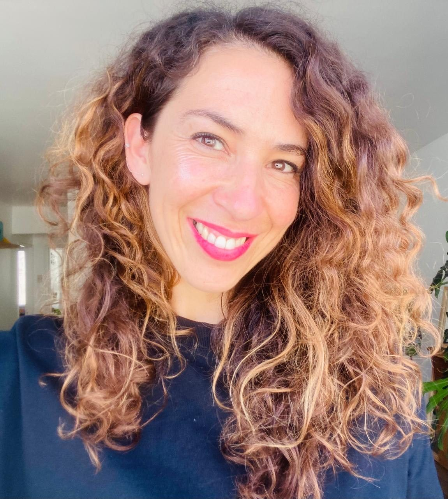
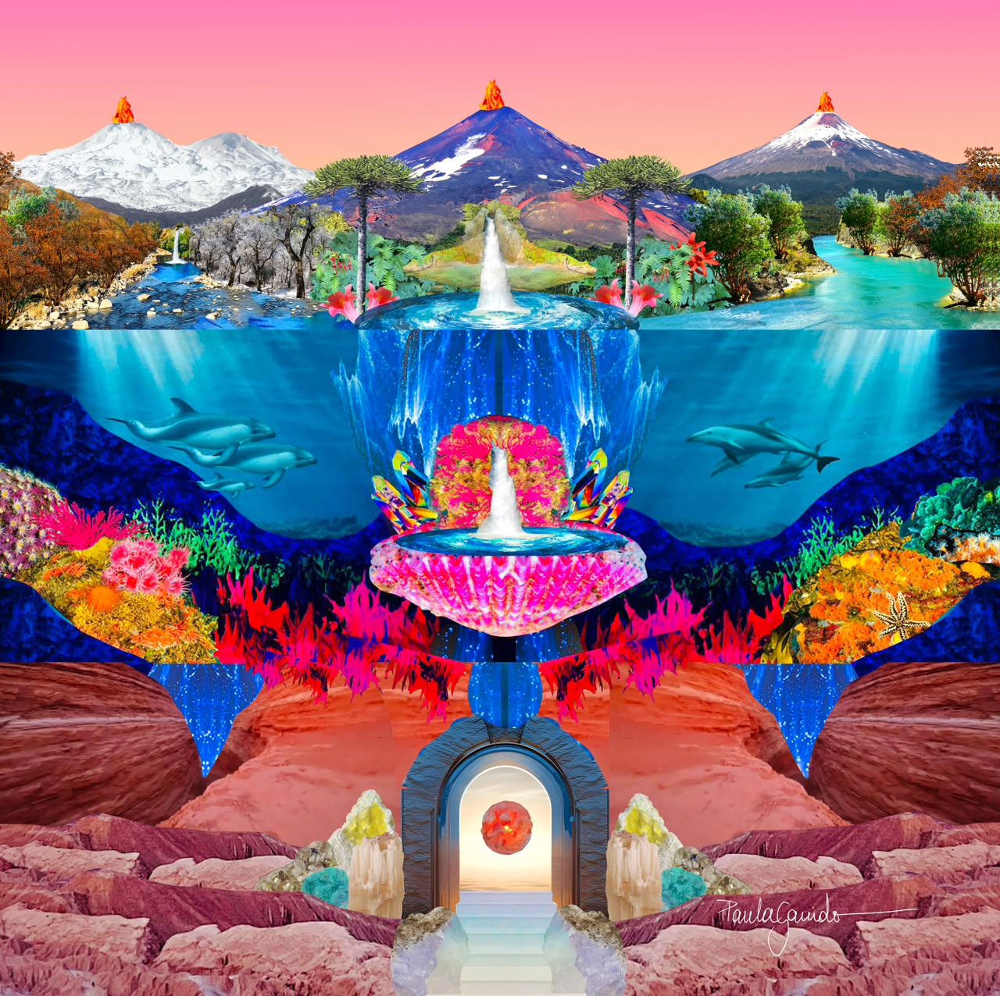
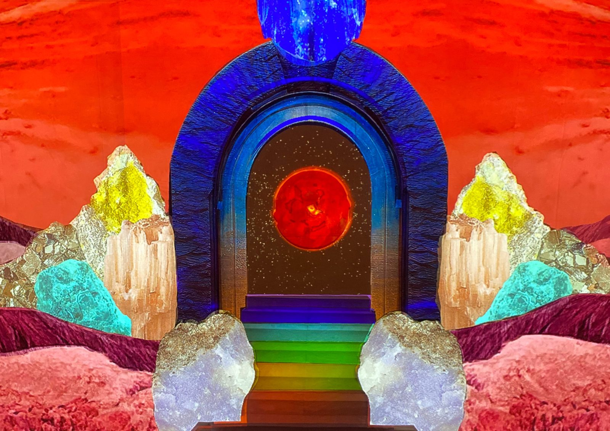
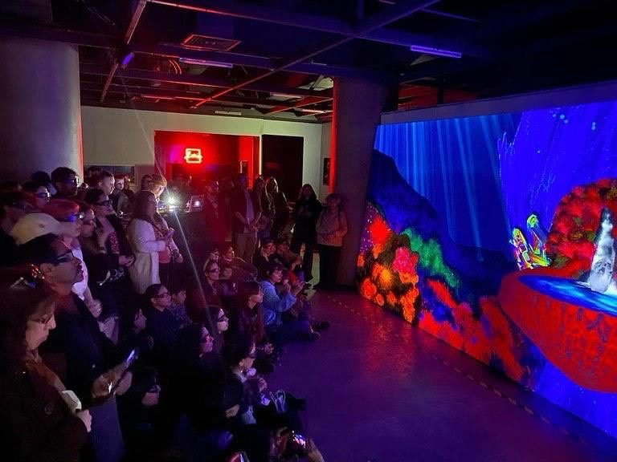

Una obra de Paula Garrido · Centro de Cultura Digital, Ciudad de México · Enero y febrero 2027

UNIVERSAL es el resultado de dos décadas de investigación y trabajo, en el que la artista visual Paula Garrido (Chile, 1983) documenta e interpreta paisajes del Chile profundo. Andes, Pacífico y Mineral son tres obras de gran formato que componen la gran obra, invitándonos a vivir un viaje a lo más profundo de nuestra naturaleza ancestral y ser, revelando la inmensidad y belleza de un país y un planeta que creemos conocer.
UNIVERSAL funciona como un catastro visual y sonoro del patrimonio natural chileno, dejándonos entrever que lo digital no se opone a lo humano, a lo vivo, a la espiritualidad, sino que se articula para amplificar lo que la imagen fija no logra transmitir. La interacción entre lo textil, lo sonoro y lo lumínico se propone como un archivo vivo, un registro de lo que aún existe y debemos preservar.
Esta obra ritual inmersiva se expondrá en el Centro de Cultura Digital, en Ciudad de México (enero y febrero de 2027), para representar a Chile y así mostrar al mundo el poder y el valor latente de nuestro territorio, ancestralidad y continente.
Esta campaña autogestionada es un llamado para que apoyes a Paula y su equipo en esta última parte del proceso: ir a México a representar a Chile con esta tremenda obra, que busca ser una experiencia significativa e inolvidable para todas las personas que sean parte.
Tenemos varias opciones con las que puedes colaborar y apoyar, todas hechas con mucho amor y gratitud, para que puedas quedarte con algo especial y reconocer el amor que Paula siente por su arte.
Cree, apoya y comparte este portal tecno espiritual que está próximo a iniciar un viaje, para que el mundo conozca el valor inmensurable de esta larga y angosta franja de tierra llamada Chile.

Recibirás un print del PORTAL UNIVERSAL, compuesto por tres obras inspiradas en el poderoso patrimonio natural de nuestro país: ANDES, la cordillera; PACÍFICO, el océano; y MINERAL, el desierto. Una composición que representa el gran Portal y Canal de lo más profundo del ser, como un ente vivo, único y lleno de fuerza de lo más profundo de nuestra tierra.

Entrega de prints: 22 y 23 de diciembre de 2026 en el taller de la artista, Providencia, Santiago. Envíos por pagar.

Te invitamos a ser parte de un encuentro único y especial en torno a MINERAL, obra inmersiva de gran formato que se presenta por primera vez en Chile. Esta experiencia nos invita a atravesar un portal tecno-espiritual para adentrarnos en la inmensidad, la belleza y la extrañeza de un planeta que creemos conocer, pero que aún guarda infinitos misterios por revelar.
La jornada será una celebración de los sentidos y un espacio para compartir en torno al arte, la naturaleza y la conexión con nuestro entorno. Disfrutaremos de una propuesta gastronómica especialmente concebida para dialogar con las dimensiones de la obra, a través de sabores, colores y nutrientes; música en vivo y una edición especial de arte impreso inspirada en el desierto de Atacama y nuestro patrimonio mineral ancestral.
$150.000
Reservar mi cupoUna invitación a hacer posible lo extraordinario.
UNIVERSAL, la obra inmersiva de gran formato de la artista chilena Paula Garrido, se prepara para abrir un nuevo capítulo de su recorrido internacional: su presentación en enero de 2027 en el Centro de Cultura Digital de Ciudad de México.
Para hacer posible este viaje y continuar expandiendo los horizontes de este proyecto, queremos invitarte a ser parte de esta experiencia a través de tu aporte, colaboración o alianza.
Cada contribución suma. Ya sea mediante una donación económica, el apoyo de una marca, la colaboración en servicios, productos, producción o difusión, existen múltiples maneras de participar y ayudar a materializar esta iniciativa cultural.
Buscamos personas, empresas y marcas que compartan nuestra visión y quieran apoyar propuestas artísticas que conectan arte, tecnología, naturaleza y espiritualidad, generando nuevas experiencias y formas de encuentro con el público.
Ser parte de UNIVERSAL es contribuir a que el arte chileno trascienda fronteras, dialogue con nuevas culturas y abra espacios para imaginar otras formas de habitar y comprender nuestro planeta.
Datos para transferencia
Desde el extranjero · PayPal
